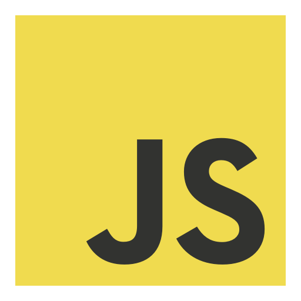
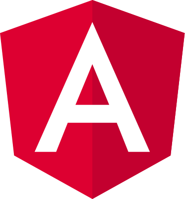
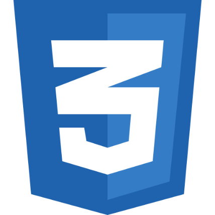
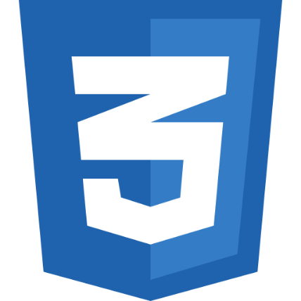

Hi, I am
Ujjwal
I am a Full-Stack ninja, designer and security researcher
But Basically what i do
I, am just a super curious guy. I am a student, so the maximum part of my day drains in studies and in the part left I try to enjoy or make cool stuff. I build custom software and services, and I like to use technology to solve problems and do things you wouldn't be normally able to do.
I will be sharing all kinds of logic, reasoning, and problems encountered during the process of engineering apps, services and other systems, with a combination of innovation and storytelling.
Tech Stack
I tend to learn all the awesome things which inspire me in the dev-market and try to create almost everything which strikes my mind.
And recently I've worked in field of cryptography. Also called a valuable tool in war, So my knowledge of cryptography classifies me as a weapon, so I am a walking MISSILE ;)


@2x.png) 


What I Created
As said, I'm curious about cool stuff, so I try to shape my ideas all the time by creating small projects, here are few and more are about to come
Xenon News App
Marvel Blog
Thinkit Game
EpicTweak Live Tewak System
For More Updated Stuff
This Website Itself !
Future Ventures
I have a basic idea about what stuff I know but still following the popular belief, I also sometimes want to expand my area of knowledge and set of skills. Here's what I have planned to learn in future:
Scalable distributed systems
Automating Stuff
Machine Learning
Cryptography
Electrical engineering
Toasting bread instantly